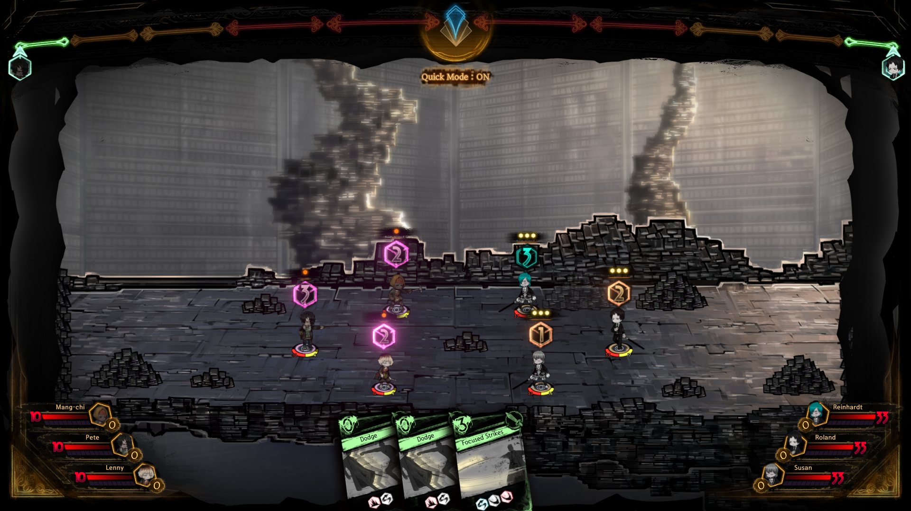

Library of Ruina, also known as LoR, is a turn-based RPG and deck-building game where you take on the role of the Library's director who seeks to expand their library with all the knowledge in the City. The game was developed by the studio Project Moon, and was fully released onto PC and Xbox One on August 10, 2021. The game follows the events of Project Moon's previous title, "Lobotomy Corporation", and is followed up by their newest title, "Limbus Company". The game has very positive reviews on Steam, and is a very story-rich experience. Click here to see LoR's Steam page

After inviting a guest, you will battle them to the death in order to claim their book and knowledge of the City. Receptions in LoR are broken down into two different phaes, the preperation stage and the stageplay stage. In the preperation stage, you will be able to see what abilities and pages the guests have equuipped, and plan for a course of action for the upcoming fight. After you are done preparing, the stageplay stage begin the turn based combat until one side has no one left standing. You will command which librarian does what action, and repeat the process for each turn. Once the reception has concluded, a victorious Library can use the earned books to further bolster the librarians. Click here to get a more detailed explanation of the battle system
Every reception begins with inviting the desired guest to the Library using books earned from previous guests to further entice them. In order to deal with the guests that are invited into the Library, your librarians will steel themselves with the pages of the previous guests who have failed to claim what they sought in the library. Burning the books of defeated guests will reward you with key pages that your librarians can equip to enhance their combat prowess. Combat pages are also earned from burning books, and these pages are used in your deck to actually fight your guests. As the battle intensifies, everyone's emotion levels will rise and give them more moves in one turn. As your collection of books grow, different abnormality battles will become avalible to you, rewarding you with powerful abnormality and E.G.O. pages which can turn the tide of any battle.

Following the events of Lobotomy Corporation, the Pianist destroyed all of L-Corp and killed thousands of people. In the wake of the disaster, a strange veil of mist formed, housing the mysterious building known as the Library. The director of the Library, Angela, seeks to create a perfect book in hopes that it will allow her to finally be free from what she was created to do before the fall of L-Corp. However, an unexpected guest was able to enter the Library without an invitation. Roland had somehow managed to breach the walls of the Library, an act that confused even himself. Reluctantly accepting the title of Angela's servant, Roland agreed to help Angela with her goal in order to get his own freedom, though Roland seems to be hiding something dark...
© 2024 Library Of Ruina Fanpage